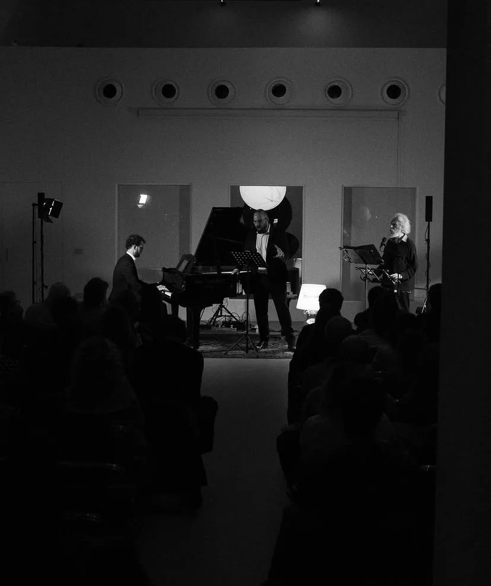
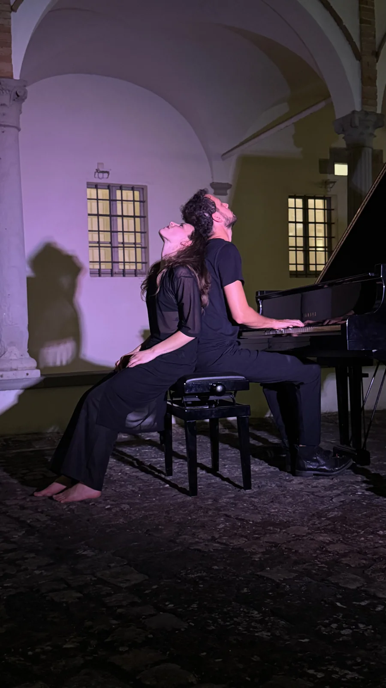

A PRO-FILI
- Al festivalÈ tra i partecipanti di PRO-FILI, in Pescheria Nuova. Sabato 10 ottobre alle 21.00 è al pianoforte nel concerto di FILO.
La biografia
Cosa c'è dietro alla bellezza? È la domanda che mi ha folgorato dopo anni di studio come pianista classico. Da quel momento ho cercato di entrare dentro la partitura, comprendere le relazioni tra le cose e come queste parlino profondamente di noi.
Provo a comporre "musica d'arte", così si potrebbe dire, sintetizzando in maniera naturale molti linguaggi dei grandi compositori che ci hanno preceduti e mescolandoli con alcune influenze del nostro tempo. Mi piace creare percorsi di connessione tra linguaggi, connettendo tradizione e ricerca. Alcune delle mie musiche sono state commissionate, eseguite e incise da artisti internazionali, come il mio Piano Concerto n. 1, e pubblicate da Universal Edition.
Nel collettivo artistico IANUA è autore, compositore, pianista e regista.
I lavori



Foto di Vedo un suono che si leva: IANUA, 2025. Anatomia di un abbraccio: IANUA, 2026.